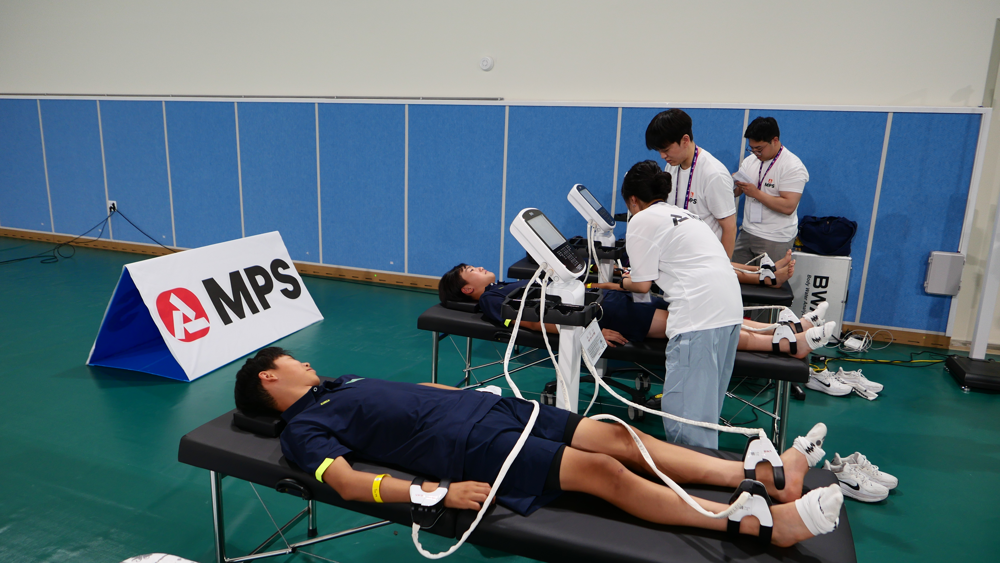
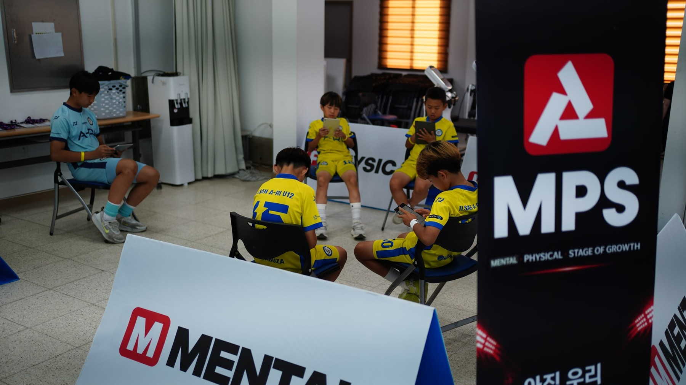
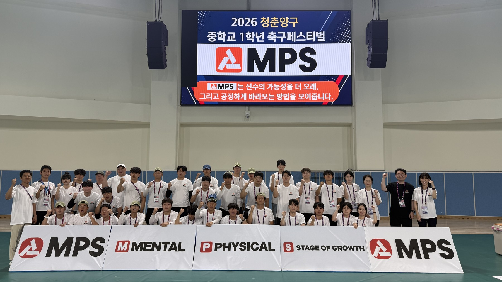

주식회사 주니어골든에이지JUNIOR GOLDEN AGE
2026 BUSINESS CONFERENCE
스포츠사회적기업 지원사업 발표자료
스포츠사회적기업 지원사업 발표자료
SPORTS SCIENCE × SPORTS KOREAN MEDICINE
1년에 4번
유소년선수의 성장로드맵을 그립니다
성장단계 기반 멘탈·피지컬 통합 선수성장관리 플랫폼, MPS
성장 속도와 신체조건이 달라도, 어린 재능이 멈추지 않도록.
선수·학부모·지도자가 함께 이해하는 데이터로 지속적인 성장을 돕습니다.
선수 성장을 읽는 세가지 차별점
OUR SOLUTION01성장단계
성장 속도에 맞춘 평가
바이오밴딩 관점으로 성장단계를 살피고, 같은 측정값도 선수의 성장 시기에 맞춰 해석합니다.
02통합 데이터
멘탈·피지컬·성장 연결
마음과 몸, 성장 데이터를 함께 읽어 개인 리포트와 팀 단위 관리정보로 전달합니다.
03지속 관리
측정 이후까지 함께
센터와 대회 현장에서 평가하고, 반복 측정으로 변화를 확인해 훈련·관리 방향을 조정합니다.
선수가 있는 곳에서 시작합니다
MPS IN ACTION



현장에서 쌓아 온 기반
OUR PROGRESS900+
유소년 엘리트선수 DB 건
30+
MOU·협력 네트워크 팀
14
스포츠기업 MOU 곳
1
선수 평가·관리 특허 출원 건
소셜벤처기업 판별 인정기술보증기금 · 2026.07
스포츠사회적기업 지원사업 선정문화체육관광부 · 국민체육진흥공단 · 2026
제공된 2026 중간평가 자료 기준 · DB는 데이터 건수 · 특허 출원번호 10-2026-0110830
지역과 세계로, 성장의 기회를 넓힙니다
BEYOND THE FIELDLOCAL CONNECTION
넥스트로컬 40+ 최종 선정
서울시 지역상생 창업지원사업을 통해
지역자원 기반 제품과 지역상생사업으로 확장합니다.
JAPAN EXCHANGE
일본과 이어가는 스포츠 교류
J리그 팀 등 한일 스포츠 현장 교류를 바탕으로
유소년 성장관리의 협력 가능성을 넓혀갑니다.